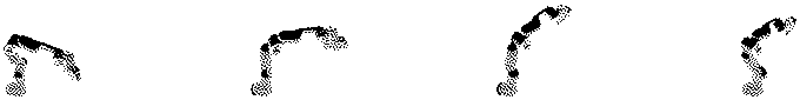

A simulator that has
never been wrong
is not a simulator
The DROID dataset records two things most robot logs blur together: what the controller was commanded to do, and where the arm actually went. They are never the same. Real joints carry friction, rotor inertia, finite stiffness, and delay.
So: replay the real commands open-loop through a simulated Panda, measure how far it drifts from the real arm, and fit the simulator until the drift shrinks. The simulator starts from the robot's first measured state and never sees ground truth again.

ATKINSON DITHER, 1 BIT PER PIXEL.
| Model | Open-loop error vs real robot |
|---|---|
| Menagerie default | 0.0431 rad |
| Identified | 0.0187 rad |
| Held-out reduction | 56.7% |
Parameters were fitted on 24 episodes and scored on 8 the optimiser never touched. The split is by episode, never by frame — frames inside one trajectory are correlated, and a frame-level split leaks the answer.
The identified values are more interesting than the error. Menagerie ships the Panda with zero dry friction and zero latency. The data disagrees with both: friction rises from nothing to 3.07, and latency lands at 3.3 steps — about 220 milliseconds at 15 Hz.


THE FIRST DATASET HAD NO ANSWER IN IT
An earlier attempt used a different Franka dataset. Its action column turned
out to be exactly state[t+1] − state[t] — correlation 1.0000
on every joint.
The "commands" were relabelled state differences. Nothing in that dataset was ever measured independently, so fitting a simulator to it would have produced a perfect, meaningless result. A perfect fit is usually evidence of a broken measurement.